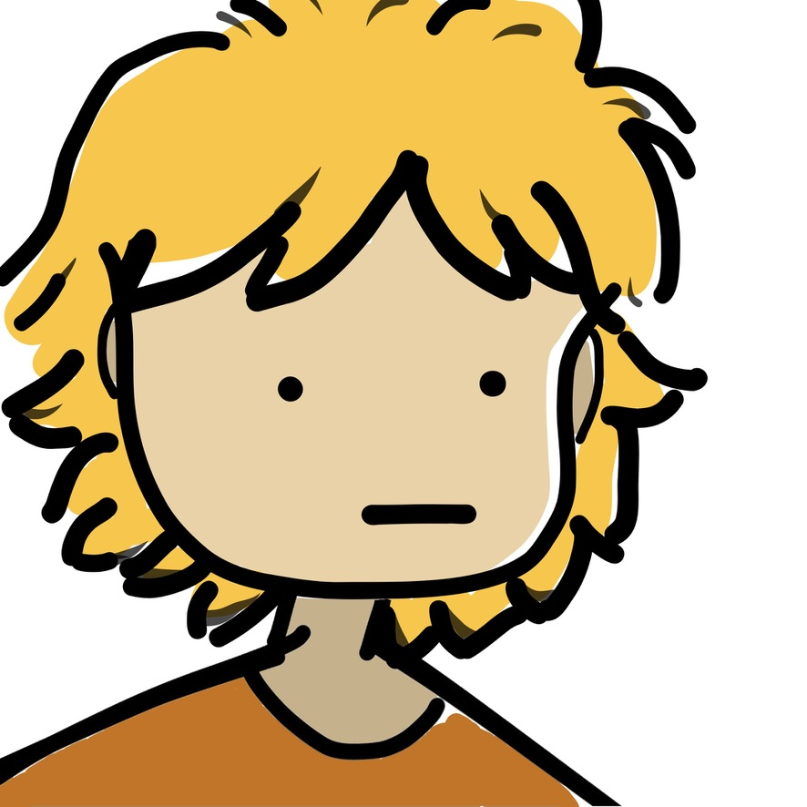

Récap de Philosophie
Merci à Lilia et Valentine pour votre aide !
Les notions clés :
Notion 1 — La Vérité.
Notion 2 — Le Devoir.
Notion 3 — Le Bonheur.
Notion 4 — La Conscience.
Notion 5 — L'inconscient.
Notion 6 — La liberté.
Notion 7 — La politique.
Notion 8 — L'etat.
Notion 9 — La justice.
Notion 10 — La religion.
Notion 11 — La l'art.
Notion 12 — technique, travaille, nature, culture.
Notion 13 — Le language.
Notion 14 — La science.
Notion 15 — Le temps.

Site créé par Alexandre